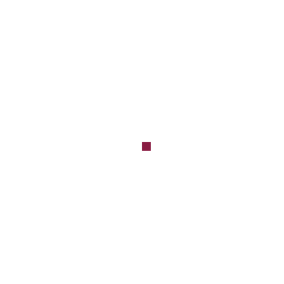

Preview App
Examples of animation
- 
Functionality:
Tools:
- Pen tool
- Mirror pen tool
- Paint bucket tool
- Paint all pixels with same color
- Eraser tool
- Rectangle
- Move tool
- Dithering tool
- Lighten tool
- Darken tool
- Color picker tool
- First and secondary colors
- Return previous image after draw
Other:
- Draw on middle canvas
- Animation preview
- Fullscreen preview
- Add/delete/copy frame
- Local storage, which save frames, shortcuts settings
- Shortcuts
- Window to change shortcuts
- Show coordinates of cursor
- Export gif to file system
About me:
- Creator: Denis Mironov
- Nickname: deminiro
- +375(29)347-91-81
- github.com/deminiro
- vk.com/denimironoff
- den.mironov2001@yandex.by